In Part 3, we briefly discussed how Bayesian networks lead to compact representation of probabilistic models.
- Consider a model with N=4 variables, each of which has k possible values (0,1,...,k–1). How many different elementary events are there in the domain? One less is the number of probabilities that we'd have to determine in order to fully specify the model. (For example, in the Car model of Part 3, with N=6 and k=2, this number was 63.)
- How many parameters would we have to define to specify the model using an "empty" Bayesian network, i.e, a network with no edges at all?
- What is the maximum number of parameters we'd have to define in a Bayesian network in this domain (N variables with k values each)? Remember that the graph has to be a DAG, i.e., no directed cycles are allowed.
- Optional: Generalize to arbitrary values of N. It may be helpful to recall the sum of a geometric series 1+k+k2+...+kN–1 = (kN–1)/(k–1), where k≠1.
-
The number of combinations is kN = k4.
Since the probabilities of the elementary events must sum to
one, it is enough to give k4–1 probability
values to define the model this way.
-
In an empty network, we only need to specify the distributions
of each variable. Since each variable has k possible values, we
need k–1 probabilities per variable, and the total number
is N(k–1) = 4(k–1).
-
The more edges there are in the network, the more parameters are
required in order to specify all the conditional
distributions. Thus, we need to calculate how many parameters
there are in the "full" network. A full network has one node
with no parents, one node with one parent, one node with two
parents, etc.
For a node with m parents, the number of possible parent configurations is km (since we assumed that the number of values that each parent can take is k). To specify the conditional distribution for all parent configurations, we thus need km(k–1) probability parameters.
Summing up the numbers over the N=4 nodes, we thus get k–1 + k(k–1) + k2(k–1) + k3(k–1).
-
For general N, the above formula becomes
(1 + k + k2 + ... + kN–1)(k–1) = kN–1,
where we used the formula for the sum of a geometric series.
Implement an algorithm for generating data from the Car network
discussed in Part 3. You should generate n tuples, each of which is
a six element list of bits (or Boolean values). You should start by
choosing the value of B so that it takes value 1
(or True) with probability 0.9. After choosing the
value of B, choose the value of R. If B=0, then R=0 with probability
1. If B=1, then R=0 with probability 0.1. Continue this way,
choosing the probabilities from the CPTs, until you have generated a
complete tuple.
Generate a sample of n=100 000 tuples. Use it to approximate the following conditional probabilities:
- P(B | R,G,¬S)
- P(S | R,I,G)
- P(S | ¬R,I,G)
- Give an interpretation to the above probabilities. Are they in line with your intuition? In other words, do they make sense?
An example solution is here.
Consider the following scenario. You live in an area where earthquakes happen on the average every 111th day. Another annoying thing is that a burglar breaks into your home on the average once a year. Both events occur independently of each other and uniformly throughout the year (so any day is like another).
In case of an earthquake, your home alarm goes off with probability 0.81. If your home is broken into, the alarm goes off with probability 0.92. If these both should occur at the same time, the alarm goes off with probability 0.97. If nothing special is going on, there's a false alarm with probability 0.0095.
Now modify the algorithm from the previous exercise so that you can generate data from variables [E]arthquake, [B]urglar, [A]larm. Generate a sample of n=100 000 tuples.
- Among the tuples with A=1, what is the fraction where B=1?
- Among the tuples with A=1 and E=1, what is the fraction where B=1?
- Give an interpretation to your answers for items 1 & 2. What probabilities do they approximate?
- Are they in line with your intuition? In other words, do they make sense? In particular: which of the fractions is bigger and why?
- Repeat the experiment a couple of times to get a feeling of how much the results change just by chance. (This is the nature of the Monte Carlo approximation.) Experiment with different values of n. How does it affect the variability?
An example solution is here.
On a machine that folds plastic film, the temperature can be varied between 130°C and 185°C. To explore how temperature influences fold thickness, a dataset of 12 temperature and thickness values is collected. Refer to the plot for details.
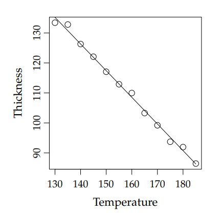
- β̂₀ = 0, β̂₁ = -0.9, σ̂ = 36
- β̂₀ = 0, β̂₁ = 0.9, σ̂ = 3.6
- β̂₀ = 252, β̂₁ = -0.9, σ̂ = 3.6
- β̂₀ = -252, β̂₁ = -0.9, σ̂ = 36
- β̂₀ = 252, β̂₁ = -0.9, σ̂ = 36
Correct Answer: (C) β̂₀ = 252, β̂₁ = -0.9, σ̂ = 3.6 - Explanation: From the plot, the intercept (β̂₀) must be 252 as the line crosses near that value. The slope (β̂₁) is negative and approximately -0.9, and the standard deviation (σ̂) is closer to 3.6 than 36.
| Theme | Objectives (after the course, you ...) | Machine learning |
|
What is Machine Learning?
Lets recap our knowledge about what Machine Learning (ML) is and go futher into Classical ML.
Machine learning is the scientific study of algorithms that improve automatically through experience.
When Alan Turing worked on the first computers, he focused on decrypting messages encoded by the German military using the Enigma machine. Deciphering these messages required testing a vast number of possibilities—a task that humans struggled with, but machines could handle relatively quickly. However, not every challenging problem for humans can be efficiently solved with a programmed algorithm. Moreover, certain problems, known as NP-hard problems, cannot be solved within a reasonable timeframe, and no computer can perform miracles to overcome this limitation.
Interestingly, there is also a class of problems that humans solve effortlessly, yet are remarkably difficult to encode into a computer program. Examples include:
- Translating text from one language to another;
- Diagnosing diseases based on symptoms;
- Comparing two documents on the internet to determine which is more relevant to a search query;
- Identifying the content of an image;
- Estimating the sale price of a property.
These problems share several common features:
- Function Representation: The solutions can often be expressed as a function that maps inputs (also called samples) to outputs (also called targets). For example, patients can be mapped to diagnoses, and documents can be mapped to relevance scores.
- No Perfect Solution: These problems rarely have a single, ideal solution. For instance, professional translators may produce different translations for the same text, both of which are valid. Similarly, doctors may occasionally misdiagnose diseases, and people may interpret an image differently.
- Labeled Examples: We often have access to many examples of correct solutions (e.g., translations of sentences into another language or labeled images). Constructing examples of incorrect solutions, if needed, is generally straightforward.
In machine learning, the function that maps objects to predictions is called a model, and the collection of labeled examples is known as the training dataset (or training set). A training dataset consists of:
- Objects: For instance, images downloaded from the internet, medical histories of patients, or user activity data from a service;
- Labels (or targets): These include captions for images, diagnoses, or information about user behavior, which serve as the outputs the model is trained to predict.
Problem Formulation
The tasks described above are examples of supervised learning problems, as the correct answers (targets) for each object in the training dataset are known in advance. Supervised learning tasks are categorized based on the nature of the set Y, which represents all possible answers (targets):
-
Regression (
Y = ℝorY = ℝM): In regression tasks, the target values are continuous. Examples include predicting the duration of a car-sharing trip, estimating demand for a specific product on a given day, or forecasting the weather in a city (e.g., temperature, humidity, and pressure as a vector of continuous values). -
Binary Classification (
Y = {0, 1}): Binary classification involves predicting one of two possible outcomes. Examples include determining whether a user will click on an ad, if a client will repay a loan on time, whether a student will pass their exams, whether a patient will develop a specific condition, or if a banana is present in an image. -
Multiclass Classification (
Y = {1, ..., K}): Multiclass classification assigns each object to one ofKpossible classes. For example, categorizing scientific articles into subject domains such as mathematics, biology, or psychology. -
Multilabel Classification (
Y = {0, 1}K): In multilabel classification, an object can belong to multiple classes simultaneously. For instance, assigning tags to a restaurant where multiple tags (e.g., "Italian," "Vegetarian") may apply at the same time. -
Ranking (
Yis a finite, ordered set): Ranking tasks involve ordering objects based on relevance or some comparative metric. A common example is search engine result ranking, where documents are sorted by relevance to a query. Importantly, the relevance score is meaningful only in the context of comparing two documents, rather than as an absolute value.
More complex output types are also possible. For instance:
- Image Segmentation: Predicting which object or object type each pixel in an image belongs to.
- Machine Translation: Generating sentences (or entire texts) in one language as translations of input text in another.
- Generative Modeling: Producing realistic new objects either from scratch or based on existing data. Examples include image resolution enhancement or applying Snapchat or Instagram filters to faces.
A smaller subset of problems falls under unsupervised learning, where only the data is available, and the target labels are unknown or do not exist. In these cases, finding the "correct" answers is not necessarily the goal. A classic example is clustering, where objects are grouped based on shared but unknown (and ideally interpretable) properties. For example, clustering documents in a digital library by topic or grouping news articles into major storylines.
Determine the type of the following tasks. When possible, try to assign them to more specific subcategories of machine learning tasks.
- Predicting the exchange rate of the euro to the dollar for the next day.
- Text stylization: Translating informal text into bureaucratic language. For example: “Pippin and Merry were kidnapped!” ↦ “Citizens Took, Peregrin Paladinovich, born 2990, and Brandybuck, Meriadoc Saradokovich, born 2982, were kidnapped by unidentified individuals.”
- Detecting cats in an image.
- Training a robotic cat to jump onto a table from any position.
- Finding sets of products frequently purchased together in a supermarket.
- This is a regression task. The model predicts a continuous value, even if it’s represented with a limited number of decimal places.
- This task involves generating new objects based on existing ones.
-
Depending on the objective, this could be:
- A regression task: Predicting the coordinates of the bounding box surrounding the cat;
- A classification task: Determining whether a cat is present in the image or not.
-
This task can be approached in different ways:
- By building a physical model of the robot's movement and calculating the optimal sequence of actions;
- By using machine learning to create a simulation and train a model to predict optimal movements. The model adjusts its behavior based on performance in the simulation.
- This is an unsupervised learning task, specifically clustering or association rule mining.
Additional Question
Ranking is a task where the target is an ordered finite set (Y = {1, ..., K}). At first glance, ranking could be treated as either classification (with K classes) or regression. Why is this not the case?
For ranking tasks, models typically predict a continuous value, which is then used to sort objects. However, it is not considered regression because the loss functions and metrics are fundamentally different. In ranking, the exact predicted values are irrelevant—what matters is that more relevant objects receive higher scores. For instance, the task “predict the 10 most relevant objects” differs significantly from classification. As new objects are introduced, the relevance order can change entirely, invalidating any fixed mapping of objects to positions.
Model and Learning Algorithm
A model is a framework or representation used to describe the world. For instance, the idea that "the Earth is flat" is a model, and it’s not as flawed as it might seem. This model is often useful when dealing with phenomena at the scale of a single city, where the curvature of the Earth can be ignored. However, if we attempt to calculate the shortest route from Paris to Los Angeles, the flat Earth model would yield incorrect results, conflicting with available data. In such cases, we need to replace it with a more accurate model, such as "the Earth is round" or "the Earth is an ellipsoid," depending on the required level of precision and the limitations of our measurement tools.
For example, a highly precise model such as "the Earth resembles a geoid with surface irregularities corresponding to mountain ranges" is excellent for certain applications. However, this level of detail might be excessively complex for most practical tasks and computationally too demanding.
In the initial sections of this course, we will primarily focus on predictive models, which aim to capture the relationship between the feature representation x of an object and its target y. These models can be expressed as y = f(x). Occasionally, we will also deal with data models, such as describing a feature with a normal distribution.
Predictive models are often chosen from a parametric family y = f_w(x), where w represents the parameters that are optimized using data.
In addition to choosing a model, selecting an appropriate learning algorithm is equally crucial. A learning algorithm is a procedure that transforms a training dataset into a trained model. For instance, in the example above, we used gradient descent to find the zero gradient for a constant model. As we will see later, gradient-based methods are widely used for training various models. These methods form a rich class of optimization techniques, making it challenging to choose the best one in some cases.
Consider a binary classification task for points in a two-dimensional space, where we use a linear model. The metric for evaluation is accuracy, which measures the proportion of correct predictions. As a learning algorithm, we can use gradient descent:
wt+1 = wt - α∇wL
Here, α is the optimization step size, a coefficient influencing the speed and stability of the algorithm. Notably, different choices of α lead to different learning algorithms, potentially yielding varying results:
- If
αis too small, the descent may fail to reach the optimum. - If
αis too large, the algorithm may "overshoot" the optimum and oscillate around it without ever converging.
We see that the choice of both the model and the learning algorithm is critical.
Now, for the training dataset, we need to determine the optimal decision boundary y = w1x + w0. The parameters w1 and w0 are adjustable (trainable) parameters of the model, which the learning algorithm will infer from the dataset. However, there is a problem: the accuracy metric is not differentiable. To address this, we need to use a differentiable function L(X, y, w), whose minimization approximately corresponds to optimizing the probability. Such a function is called a loss function or simply loss.
Model Selection and Overfitting
It might seem that we exaggerated the challenges of machine learning. After all, for any machine learning task, one could construct a "perfect" model by simply memorizing the entire training dataset along with its labels. Such a model could achieve flawless performance on any metric, but it would provide little value. The ultimate goal is to identify patterns in the data that allow the model to generalize and make accurate predictions on unseen data.
A key consideration is the model’s generalization ability, which reflects how well the model learns patterns that apply beyond the training dataset and delivers reliable predictions on new, unseen data. To safeguard against poor generalization, the dataset is typically split into two parts: the training set and the test set. The training set is used to train the model, while the metrics are evaluated on the test set.
This approach helps distinguish models that merely overfit the training data from those that successfully generalize. A model that generalizes has effectively captured meaningful patterns in the data and can make useful predictions for objects it has never encountered.
Consider, for example, three regression models trained on the same synthetic dataset with a single feature. The yellow points represent the training dataset. In this scenario, we assume there is an underlying "true" relationship (shown as a dashed line) that is distorted by noise (e.g., measurement errors or the influence of other factors).
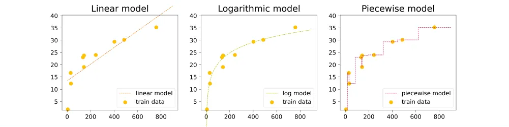
The leftmost linear model is insufficient: it does what it can but poorly approximates the relationship, especially for small and large values of x. On the right, we see a model that "memorized" the entire training dataset (indeed, to compute this function’s value, we would need to know the coordinates of all the original points) instead of modeling the underlying dependency. Finally, the central model, while not passing through the training data points, approximates the true dependency reasonably well.
A model that excessively fits the data is referred to as overfitted.
As model complexity increases, the error on the training dataset decreases. In many cases, a highly complex model will behave like one that has "memorized the entire training dataset," but it will fail to generalize. The patterns learned will be overly specific and tailored to the training data. This behavior is evident in the three graphs:
- The linear function on the left is very simple but only roughly approximates the true relationship.
- On the right, we see a highly intricate function that perfectly fits the training data points but is clearly too eccentric to reflect any natural dependency.
- The optimal generalization is achieved with a model that is neither too simple nor too complex, as shown in the central graph.
Linear Models
Why Linear Models?
Imagine you have a set of objects X, and you want to assign a value to each object. For example, you might have a set of bank card transactions and want to determine which of these transactions were fraudulent. By dividing all transactions into two classes—labeling legitimate transactions as 0 and fraudulent ones as 1—you obtain a basic classification problem.
Now consider another situation: you have geological survey data and want to estimate the potential of various deposits. In this case, your model might evaluate the expected annual profitability of a mine based on geological data. This is an example of a regression problem. The numbers that we want to assign to objects from our set are sometimes called targets.
Thus, classification and regression tasks can be formulated as finding a mapping from the set of objects X to the set of possible targets.
Mathematical Formulation
-
Classification:
X → {0, 1, ..., K}, where0, ..., Kare class labels. -
Regression:
X → R.
Clearly, simply assigning arbitrary numbers to objects is not meaningful. We want to identify fraudulent transactions quickly or decide where to build a mine. This requires a criterion of quality. The goal is to find a mapping that best approximates the true relationship between objects and their targets. However, determining what "best" means is a complex question, which we will revisit often.
For now, a simpler question arises: Among which mappings will we search for the best one? There are countless possible mappings, but we can simplify the task by agreeing to search only within a predefined parameterized family of functions. This section focuses on the simplest such family—linear functions of the form:
y = w1x1 + ... + wDxD + w0,
where y is the target variable, (x1, ..., xD) is the feature vector corresponding to an object in the dataset, and w1, ..., wD, w0 are the model parameters. The features are also called features (from the English "features").
The vector w = (w1, ..., wD) is often referred to as the weight vector, since the model's prediction can be viewed as a weighted sum of the object's features. The term w0 is called the bias or intercept. More compactly, a linear model can be expressed as:
y = ⟨x, w⟩ + w0,
where ⟨x, w⟩ denotes the dot product of the feature vector x and the weight vector w.
Now that we have chosen a family of functions to search for a solution, the task becomes significantly simpler. Instead of finding an abstract mapping, we now search for a specific vector (w0, w1, ..., wD) ∈ ℝD+1.
Note: To apply a linear model, each object must already be represented as a vector of numerical features (x1, ..., xD). Naturally, raw data such as text or graphs cannot be directly input into a linear model. It is necessary to first derive numerical features for these data types. A model is called linear if it is linear with respect to these numerical features.
Let’s analyze how such a model would work if D = 1, meaning our objects differ by only one numerical feature. In this case, our linear model takes a very simple form:
y = w1x1 + w0.
For a regression task, we aim to approximate the target value y as a linear function of the variable x. But what does linearity mean for a classification task?
Consider the example of detecting fraudulent transactions. Suppose we know exactly one numerical variable: the transaction amount. For binary classification (legitimate vs. potentially fraudulent transactions), we will search for a decision rule: wherever the function's value is positive, we predict one class; where it is negative, we predict the other. In our example, the simplest rule would be a threshold transaction amount above which a transaction is flagged as suspicious.
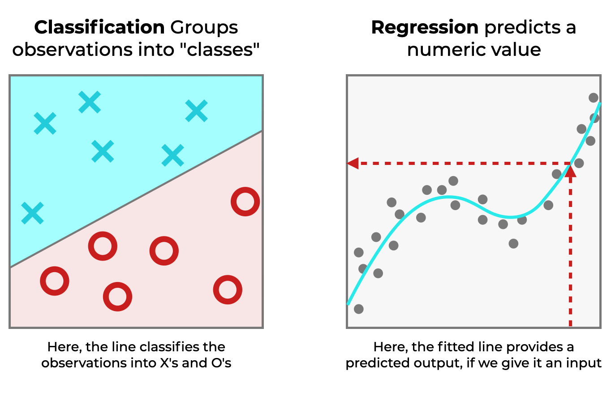
In the case of higher dimensions, instead of a line there will be a hyperplane with a similar meaning.
Advantages and Limitations of Linear Models
Advantages of Linear Models
Beyond their simplicity, linear models have several other advantages. For instance, it is relatively easy to evaluate how specific features influence the prediction. If a weight wi is positive, an increase in the i-th feature will:
- Increase the target value in regression tasks;
- Shift the classification decision toward one of the classes in classification tasks.
The magnitude of the weights also has a clear interpretation: the larger the weight wi, the more "important" the i-th feature is for the final prediction. This interpretability makes linear models particularly valuable in industrial applications where errors can have significant consequences. For example, in scenarios where human lives depend on the model's decisions, it is critical to understand how the model makes decisions and the principles it follows.
However, not all machine learning methods are equally interpretable. For example, understanding the behavior of artificial neural networks or gradient boosting models is significantly more challenging.
Limitations of Linear Models
Despite their advantages, blindly trusting the weights of linear models is not advisable for several reasons:
- Limited Function Class: Linear models are a narrow class of functions and perform well on small datasets and simple tasks. However, for more complex problems, you may need to create additional features that are complex functions of the original ones. This process is called feature engineering. While feature engineering can improve model performance, excessive reliance on artificial features may undermine the interpretability of the model, depending on the judgment of the expert constructing it.
- Multicollinearity: If features are approximately linearly dependent, the coefficients of the linear model may lose their physical meaning. This issue, along with techniques to address it, will be discussed later in the section on regularization.
- Scale Dependency: Statements like "this coefficient is small, so this feature is not important" should be treated with caution. The scale of the feature might require a compensatory small coefficient. Additionally, a weak dependency might become crucial in specific situations. These conclusions should be supported by data, for example, through statistical tests (discussed briefly in the section on probabilistic models).
- Data Sensitivity: The specific values of the weights can vary depending on the training dataset. However, as the dataset size increases, the weights will gradually converge to those of the "best" linear model that could be constructed with infinite data.
Linear Classification
Let’s now discuss the task of classification. To begin, we’ll focus on binary classification with two classes. Generalizing this problem to classification with K classes is straightforward.
In this case, our targets y encode membership in either the positive or negative class, represented by the set {-1, 1}. (In this section, we will use this convention to denote classes, though in practice you may often encounter labels such as {0, 1}.) The feature vectors x remain elements of ℝD.
Goal of a linear model is to be trained in way that the hyperplane it defines separates objects of one class from those of the other as effectively as possible.

Logistic Regression
In this section, we will denote classes as 0 and 1.
Logistic regression arises from the desire to view classification as a task of predicting probabilities. A good example is predicting clicks on the internet (e.g., in advertisements or search results). The presence of a click in a training log does not guarantee that, under the exact same conditions, a user will click on the object again. Instead, objects have an inherent "clickability," representing the true probability of a click for a given object. Each click in the training examples is considered a realization of this random variable, and we assume that, in the limit, the ratio of positive to negative examples at any point will converge to this probability.
The challenge is that probability, by definition, is a value between 0 and 1, and there is no straightforward way to train a linear model while ensuring this constraint is satisfied. To address this, we can train the linear model to predict a value related to probability but unconstrained, ranging from (−∞, ∞), and then transform the model's output into a probability. This value is the logit (or log-odds)—the logarithm of the ratio of the probability of a positive event to a negative event:
log(p / (1 − p)).
If the model's output is log(p / (1 − p)), then calculating the desired probability is straightforward:
⟨w, xi⟩ = log(p / (1 − p))
e⟨w, xi⟩ = p / (1 − p)
Solving for p, we get:
p = 1 / (1 + e−⟨w, xi⟩)
The function on the right-hand side is called the sigmoid function and is defined as:
σ(z) = 1 / (1 + e−z)
Thus, p = σ(⟨w, xi⟩).
Now that we have the probability of the positive class, how do we transition to predicting the class itself? In other methods, it was sufficient to compute the sign of the prediction. However, in logistic regression, all predictions are positive and fall within the range of 0 to 1. So, what should we do?
An intuitive—but not entirely correct (or even incorrect)—approach is to use a threshold of 0.5. A more accurate method is to select this threshold separately, specifically for the trained regression model, by minimizing the desired metric on a held-out test dataset. For example, you could adjust the threshold to ensure that the proportion of positive and negative classes aligns closely with real-world distributions.
It is worth noting that this method is called logistic regression, not logistic classification, because it predicts real numbers—logits—rather than discrete classes.
Summary
A linear model can be viewed as a single-layer neural network. As a result, many techniques originally developed for linear models are now reused in deep learning tasks. Moreover, fundamental approaches to regression, classification, and optimization are essentially the same.
While linear models are rarely used in practice today, understanding their components and how they are constructed remains highly valuable and relevant.
Metric methods
K-Nearest Neighbors (KNN) Algorithm: Fast Nearest Neighbor Search
The essence of metric methods is well captured by the saying: "Tell me who your friends are, and I’ll tell you who you are." Algorithms in this class have almost no training phase. Instead, they simply store the entire training dataset and, during prediction, find objects similar to the target.
This process is called lazy learning because no actual training occurs. Metric models are also non-parametric, as they do not make explicit assumptions about the global laws governing the data. For instance:
- Linear regression assumes that the underlying relationship is linear (with unknown coefficients recovered from the dataset).
- Linear binary classification assumes the existence of a hyperplane that separates the classes reasonably well.
Metric methods, in contrast, are local: they assume that an object's properties can be inferred by examining its neighbors.
These characteristics can be particularly useful when dealing with complex datasets for which we cannot devise a global model. However, due to lazy learning, the algorithm becomes impractical for large datasets. Despite this limitation, these algorithms are simple to understand, quite accurate, and highly interpretable, making them a common baseline in many tasks.
In this section, we will discuss one of the most well-known metric algorithms—the k-nearest neighbors (KNN) method. This approach is primarily engineering-focused due to its lack of a training phase and is rarely used in practice today. However, many techniques underlying the algorithm are applied in other methods.
For example, the nearest neighbor search algorithms, which are integral to the method, have much broader applications. Additionally, KNN is a very simple and easily interpretable algorithm, making it valuable to study. We will explore its advantages, disadvantages, areas of application, and possible generalizations in more detail.
The nearest neighbor (NN) classifier is among the simplest possible classifiers. In the training stage, if you can call it that, all the training data is simply stored. When given a new instance, x(test), we find the training data point x(NN) which is closest to x(test) and output its class label y(NN) as the predicted class label. An example is given in the following diagram (panels a and b).
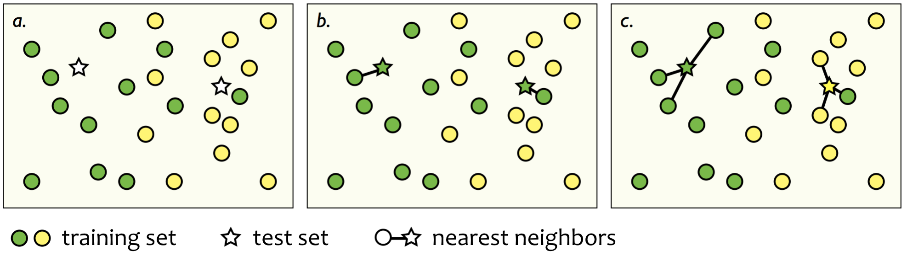
In the k-nearest neighbor (k-NN) classifier, the idea is very similar but here it is not only the single nearest point that is used. Instead, we find the k nearest training data points, and choose the majority class among them as the predicted label. This is illustrated in panel c of the above diagram.
An interesting question related to (among other things) the NN classifier is the definition of distance or similarity between instances. In the illustration above, we implicitly assumed that the Euclidean distance is used. However, this may not always be reasonable or even possible: the type of the input x may be, e.g., a string of characters (of possibly different lengths). Below are the other possible metrics. We wont dive deeper into them, but it's important to know that Euclidean distance is thus most common, but not the only option.
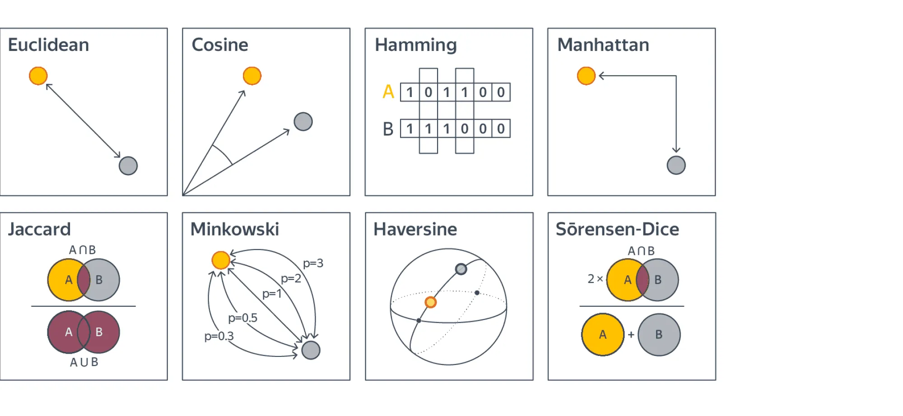
Let us now proceed to a more formal description of the algorithm. We will first consider the task of multi-class classification, leaving regression for later.
Suppose we are given a training dataset X = {(xi, yi)i=1N}, where xi ∈ X and yi ∈ Y = {1, ..., C}. Additionally, let a symmetric distance function ρ: X × X → [0, +∞) be defined. Assume we want to classify a new object u. To do so, we find the k nearest neighbors of u in terms of the distance ρ from the training dataset:
Xk(u) = {xu(1), ..., xu(k)}, such that:
∀ xin ∈ Xk(u), ∀ xout ∈ X ∖ Xk(u): ρ(u, xin) ≤ ρ(u, xout). (1)
Let the class label of the object xu(i) be denoted by yu(i). The class of the new object u is then naturally defined as the most frequently occurring class among the objects in Xk(u):
a(u) = argmaxy ∈ Y ∑i=1k I[yu(i) = y]. (2)
This formula might seem intimidating at first, but it’s quite simple: for each class label y ∈ Y, the number of neighbors of u with that label is calculated by summing over all neighbors the indicators of the events where the neighbor’s label equals y.
Estimating Class Probabilities
This algorithm also allows us to estimate class probabilities. To do so, we simply compute the class frequencies among the neighbors:
P(u ∼ y) = (1 / k) ∑i=1k I[yu(i) = y].
While this function satisfies the properties of a probability (it is non-negative, additive, and bounded by 1), it is merely a heuristic.
Despite the lack of a formal training phase, the KNN algorithm can easily overfit. You can observe this yourself by using a small number of neighbors (e.g., one or two), which results in highly complex class boundaries. This occurs because the parameters of the algorithm effectively include the entire training dataset, which can be quite large. As a result, the algorithm can easily adapt too closely to the specific data it has been given.
Interactive Example
You can explore an interactive example of how the KNN algorithm works by visiting the link below:
Interactive Example of KNN Algorithm
Applications of KNN
Despite its inefficiency for tasks involving large datasets, the KNN algorithm has many real-world applications. Here are some examples:
- Recommender Systems: The task of "suggesting something similar to what the user likes" naturally lends itself to KNN. While more advanced algorithms are often used today, KNN remains a strong baseline.
- Finding Semantically Similar Documents: If the vector representations of documents are close to each other, their topics are likely to be similar.
- Anomaly Detection and Outlier Identification: Because KNN stores the entire training dataset, it can easily assess how similar a target object is to the data it has seen.
- Credit Scoring: Ratings for individuals with similar salaries, job positions, and credit histories should not differ significantly, making KNN a suitable solution for this task.
Decision Trees
Training Tree-Based Models for Classification and Regression. Efficient Construction of Decision Trees.
In this section, we will explore another family of machine learning models—decision trees.
A decision tree predicts the value of a target variable by applying a sequence of simple decision rules (known as predicates). This process somewhat aligns with the natural way humans make decisions.
Although the generalization ability of decision trees is limited, their predictions are computationally inexpensive. This makes decision trees a common building block for constructing ensembles—models that make predictions by aggregating the outputs of multiple models. We will discuss ensembles in the next section.
Training Tree-Based Models for Classification and Regression. Efficient Construction of Decision Trees.
Let’s start with a small example. The image below illustrates a tree constructed for a classification task with five classes:
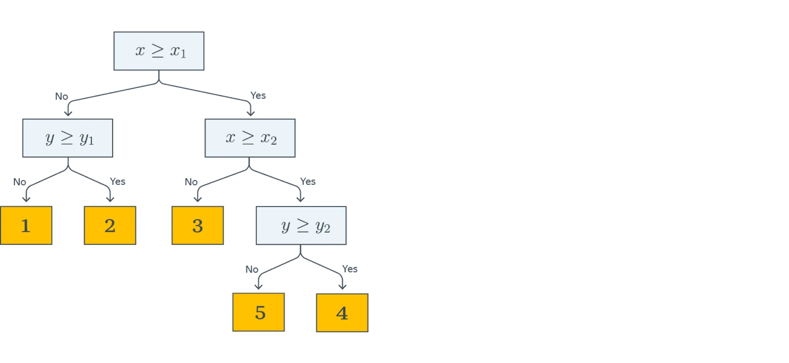
In this example, objects have two features with real-valued attributes: X and Y. The decision about which class a given object belongs to is made by traversing the tree from the root to a leaf.
Each node in the tree contains a predicate. If the predicate is true for the current example in the dataset, we move to the right child; otherwise, we move to the left child. In this example, all predicates are simple threshold checks for a feature value:
B(x, j, t) = [xj ≤ t]
The leaves of the tree contain predictions (e.g., class labels). Once we reach a leaf, the object is assigned the prediction recorded in that leaf.
The image below visualizes the process of creating decision boundaries generated by the tree (shown on the right side of the image):
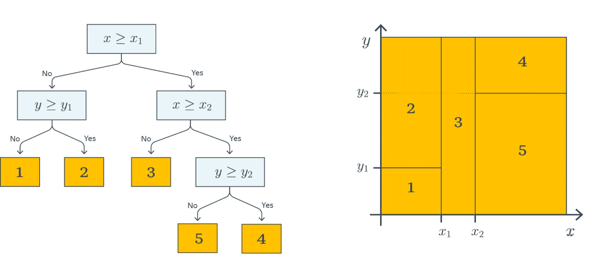
Each predicate splits the current subset of the feature space into two parts. In the first step, the split based on [X ≤ X1] divides the entire plane into two corresponding regions. At the next level, the region where X ≤ X1 holds is further split into two parts based on the second feature Y ≤ Y1, resulting in regions 1 and 2. The same process is repeated for the right branch of the tree, and so on, until the leaf nodes are reached, forming five regions in the feature space. Each object in the dataset is assigned to one of these five regions, determining its class based on the region it falls into.
This example illustrates that decision trees perform a piecewise-constant approximation of the target dependency. Below is an example visualization of the decision surface generated by a depth-4 tree trained on data from the Ames Housing Dataset. In this dataset, two features were selected: the lot frontage width (Lot_Frontage) and the lot area (Lot_Area). The task was to predict the property price.
For clearer visualization, data points with Lot_Frontage > 150 and Lot_Area > 20000 were removed before constructing the tree. The resulting decision surface shows that each rectangular region predicts the same price:
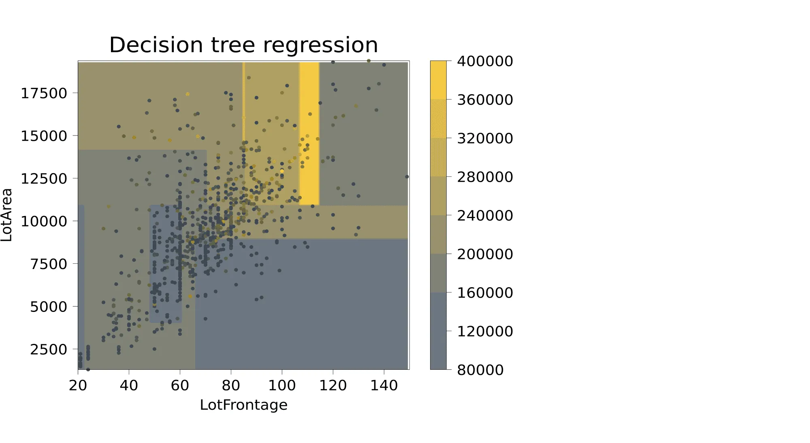
Ensembles in Machine Learning
Imagine you have several models trained on your data. Is it possible to create a procedure that leverages all these models and achieves better performance on test data than any individual model alone?
The answer is yes. In this section, we will explain how.
Bagging
The idea behind bagging (bootstrap aggregation) is as follows. Suppose the training dataset contains n objects. We randomly sample n examples from it with replacement, forming a new dataset X1. This means some elements of the original dataset might not appear in X1, while others might appear multiple times. Using an algorithm b, we train a model b1(x) = b(x, X1) on this dataset.
We repeat this procedure: form a second dataset X2 by sampling n examples with replacement, and train another model b2(x) = b(x, X2). Repeating the process k times, we obtain k models trained on k datasets.
To make a prediction for a new object, we average the predictions of all models:
a(x) = (1 / k) (b1(x) + ⋯ + bk(x)).
The process of generating subsets through sampling with replacement is called bootstrapping, and the models b1(x), …, bk(x) are often referred to as base algorithms (though "base models" might be a more accurate term). The model a(x) is called the ensemble of these base models.
Example: Bagging with Decision Trees
Suppose our target dependency f(x) is defined as:
f(x) = x sin(x),
with added normal noise ϵ ∼ N(0, 9). Here is an example of a sample from such data:
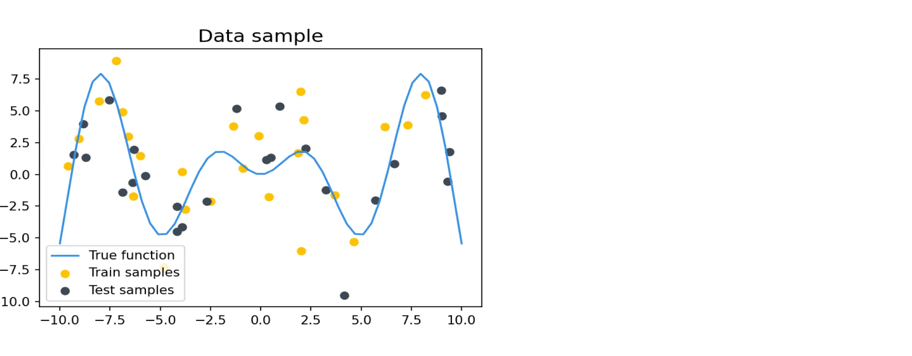
Let’s examine how the predictions of depth-7 decision trees and bagging over such trees depend on the training dataset. We will train decision trees 100 times on various random samples of size 20. Additionally, we will use bagging with 10 depth-7 decision trees as base classifiers, training it 100 times on random samples of size 20 as well.
If we visualize the predictions of the trained models across all 100 iterations, we get a result similar to this:
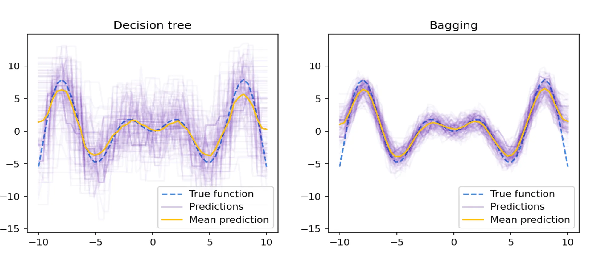
From the illustration above, it is evident that the overall variance of predictions with respect to the training set is significantly lower for bagging compared to individual decision trees. However, on average, the predictions of individual trees and bagging do not differ.
To confirm this observation, we can visualize the bias and variance of random trees and bagging as a function of the maximum tree depth:
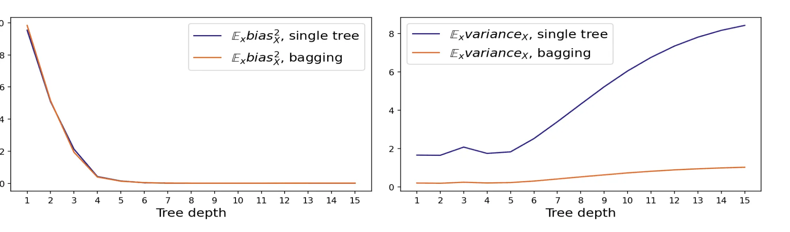
The graph clearly shows how significantly bagging reduces variance. In fact, the variance decreased by almost a factor of 10, which corresponds to the number of base algorithms (k) used by bagging for prediction.
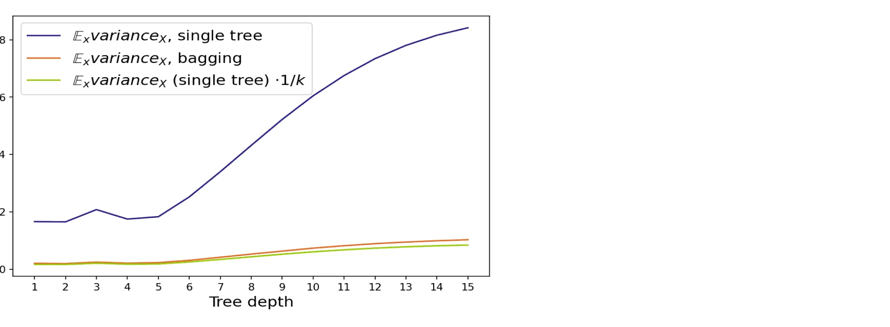
Random Forest
In the previous section, we assumed that base algorithms are uncorrelated, leading to a significant reduction in the ensemble's variance compared to its individual components. However, in practice, achieving zero correlation is difficult since base algorithms are trained on overlapping datasets and the same target dependency. Nevertheless, strict independence is not necessary; it is sufficient for the algorithms to be somewhat different from each other. This principle underlies the development of the bagging idea for decision trees, resulting in the Random Forest.
Constructing a Random Forest
To build an ensemble where the base algorithm is a decision tree, follow this procedure:
-
For constructing the
i-th tree:- As in standard bagging, a random subset
Xiis drawn with replacement from the training datasetX, maintaining the same size asX. -
During training, at each node of the tree,
n < Nfeatures are randomly selected (whereNis the total number of features). The optimal split is then found among these features. This method, known as random subspaces, helps control the degree of correlation between base algorithms.
- As in standard bagging, a random subset
-
To make predictions with the ensemble on a test object:
- For regression, average the predictions of all trees.
- For classification, select the most frequent class (majority vote).
- Profit. You have constructed a Random Forest, combining bagging with the random subspace method for decision trees.
What Should Be the Depth of Trees in a Random Forest?
The error of a model (which we can influence) consists of bias and variance. Bagging reduces variance, but it does not affect bias. Therefore, to ensure that a random forest has low bias, the individual trees in the ensemble must also have low bias.
Shallow trees have few parameters, meaning they can only capture high-level statistics of the training subset. These statistics will be similar across subsets but will not describe the target dependency in detail. As a result, predictions on test objects will be stable but inaccurate (low variance, high bias).
On the other hand, deep trees can memorize the training subset in detail. This means predictions on test objects will vary significantly depending on the training subset but will, on average, be close to the true value (high variance, low bias).
Conclusion: Use deep trees.
How Many Features Should Be Provided to Each Tree?
By limiting the number of features used to train each tree, we also control the quality of the random forest. The more features used, the higher the correlation between trees, reducing the benefit of ensembling. Conversely, using fewer features weakens the individual trees.
Practical Recommendation: For classification, use the square root of the total number of features. For regression, use one-third of the features.
How Many Trees Should a Random Forest Contain?
As shown earlier, increasing the number of base algorithms in the ensemble reduces variance but does not affect bias. However, because the number of features and training subsets available for tree construction is finite, it is not possible to reduce variance indefinitely. It is advisable to plot the error as a function of the number of trees and limit the forest size when the error stops decreasing significantly.
Another practical limitation is the runtime of the ensemble. Fortunately, random forests can be constructed and applied in parallel, reducing computation time if multiple processors are available. However, the number of processors is likely far smaller than the number of trees, and the trees themselves are usually deep. Thus, a large random forest may take longer than desired to compute, and reducing the number of trees—while slightly sacrificing accuracy—can be a viable option.
Boosting
Boosting is an ensemble method that, like the methods discussed earlier, builds multiple base algorithms from the same family and combines them into a stronger model. The key difference is in the training process:
- In bagging and random forests, base algorithms are trained independently and in parallel.
- In boosting, base algorithms are trained sequentially.
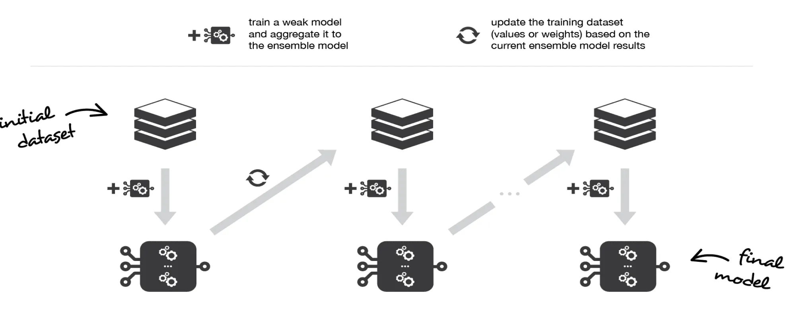
In boosting, each subsequent base algorithm is trained to reduce the overall error of all its predecessors. As a result, the final ensemble will typically have lower bias than any individual base algorithm (though variance reduction may also occur).
Choice of Base Algorithms
Since the primary goal of boosting is to reduce bias, base algorithms are often chosen to have high bias and low variance. For example, if the base classifiers are decision trees, they should typically have a small depth—usually no more than 2–3 levels.
Another important reason for choosing high-bias models as base algorithms is their faster training time. This is critical for sequential training, as it can become computationally expensive if each iteration involves training a complex model.
Practical Applications
Currently, the most widely used form of boosting in practice is gradient boosting, which is discussed in detail in a dedicated section.
While random forests are powerful and relatively easy to understand and implement, they often perform worse than gradient boosting in practical applications. Consequently, gradient boosting has become the go-to solution for working with tabular data. In domains involving homogeneous data types, such as images or text, neural networks dominate.
Stacking
Stacking is an ensemble algorithm with key differences compared to previous methods:
- It can use algorithms of different types, not just from a fixed family. For example, base algorithms could include k-nearest neighbors and linear regression.
- The outputs of the base algorithms are combined using a trained meta-model rather than a simple aggregation method like summation or averaging.
The training process for stacking involves several steps:
- The overall dataset is split into training and test sets.
-
The training set is divided into
nfolds. These folds are processed similarly to cross-validation:-
On each iteration,
(n−1)folds are used to train the base algorithms, while the remaining fold is used for predictions (to compute meta-features).
-
On each iteration,
- The meta-model is trained on the computed meta-features. Depending on the task, the meta-model may also take features from the original dataset as input.
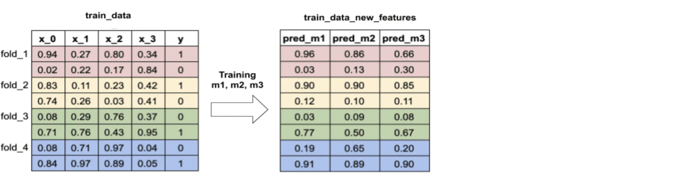
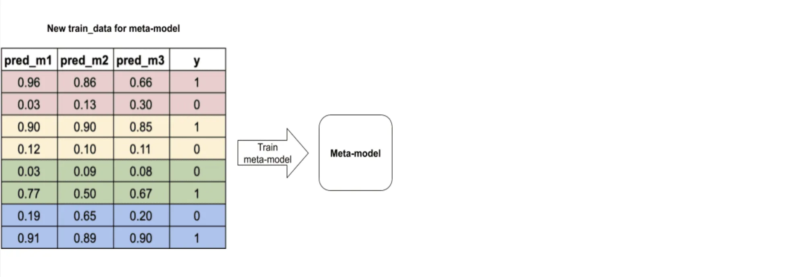
To generate meta-features on the test set, base algorithms can be trained on the entire training set. In this case, overfitting should not occur.
If there is a large amount of data, the training set can be split into two non-overlapping parts: one for training the base algorithms and the other for generating predictions and training the meta-model. Using such a simple split instead of cross-validation on the training data is sometimes referred to as blending. If there is an abundance of data, the test set can also be split into two parts: the test set and a validation set, with the latter used for tuning the hyperparameters of the participating models.
From the perspective of bias and variance, stacking does not have a direct interpretation, as it does not explicitly minimize either component of the error. A well-performing stacking model simply reduces the overall error, which consequently decreases its components as well.
Further Reading
Naive Bayes Classifier
The naive Bayes classifier is actually already familiar to you from the spam filter problem in Part 3. Here we will see how the same idea can be applied to handwritten digit recognition. In the spam filter application, the class variable was binary (spam/ham) and the feature variables were the words in the message. In the digit recognition application, the class variable has ten different values (0,...,9), and the feature variables are the 28 × 28 = 784 pixel values (binary black/white) in the bitmap images. We store the pixel values in a single vector and use the value Xj=1 to indicate that the j'th pixel is white. The value Xj=–1 is used for the black color for convenience.
Here too, the feature variables are assumed to be independent of
each other given the class value, i = 0,...,9. In the training
stage, the algorithm estimates the conditional probabilities of each
pixel being white in an image of class i for each class and each
pixel. In the same manner as in the spam filter case, these
probabilities can be estimated as empirical frequencies:
P(Xj = 1 | Class = i) = #{Xj=1, Class=i} /
#{Class=i},
where #{Xj = 1, Class=i} is the number of training instances
of class i where the j'th pixel is white, and #{Class=i} is the
overall number of class i instances.
This estimator is implemented by the following pseudocode:
train_NB(data):
1: for each class i in 0,...,9:
2: model.prior[i] = #{class=i} / n
3: for each pixel j in 0,...,783:
4: model.cpt[i,j] = #{Xj=1, class=i} / #{class=i}
5: return model
The estimated values are stored as the array cpt in
a model object. The array prior stores
the estimates of the probabilities P(Class=i) for all i=0,...,9.
Given a new image with pixel values
x0,...,x783 (so, for example, –1,–1,–1,1,... if the first
three pixels are black and the fourth is white, etc) the classifier computes
the joint probability
P(Class=i, X0=x0,...,X783=x783)
= P(Class=i) P(X0=x0 | Class=i) × ...
× P(X783=x783 | Class=i)
for all i=0,...,9.
The sum of these probabilities over the ten class values,
Z, is the annoying denominator in the Bayes rule, so we can obtain
the posterior probabilities by dividing the above joint
probabilities by Z:
P(Class=i | X0=x0,...,X783=x783)
= P(Class=i) P(X0=x0 | Class=i) × ...
× P(X783=x783 | Class=i) / Z
Pseudocode for doing computing the posterior probabilities is below.
posterior_NB(model, image):
1: Z = 0; posterior = empty array
2: for each class i in 0,...,9:
3: posterior[i] = model.p[i]
4: for each feature j in 0,...,783:
5: if image[j] = 1:
6: posterior[i] = posterior[i] * model.cpt[i,j]
7: else:
8: posterior[i] = posterior[i] * (1-model.cpt[i,j])
9: Z = Z + posterior[i]
10: for each class i in 0,...,9:
11: posterior[i] = posterior[i] / Z
12: return posterior
Note that since the pixels can only take one of two possible values (white or black), the probability of a pixel being black is obtained as one minus the probability of a white pixel (line 8 in the pseudocode).
To obtain a classifier that outputs a single class value, instead of the full posterior probability, we can pick the maximum a posteriori class value, i.e., the most probable class.
Conclusion of Part 4: Classical Machine Learning Methods
In this part, we explored a range of classical machine learning methods, including decision trees, ensemble methods such as bagging, boosting, and random forests, as well as techniques like stacking and blending. These approaches form the foundation of machine learning and are widely used in various practical applications due to their interpretability, flexibility, and ability to handle tabular data effectively.
We also examined the principles and implementation details of algorithms like the k-nearest neighbors (KNN) method and the naive Bayes classifier. These algorithms, despite their simplicity, provide powerful baselines for classification and regression tasks, offering a balance between computational efficiency and accuracy.
A key takeaway from this part is the importance of understanding the trade-offs between bias and variance, which play a crucial role in model selection and performance optimization. Ensemble methods, such as random forests and gradient boosting, demonstrate how combining multiple models can lead to more robust predictions by reducing variance and, in some cases, bias.
As machine learning evolves, many of these classical methods continue to serve as benchmarks and foundational tools in solving real-world problems. They are particularly effective for structured data and remain a critical part of any machine learning practitioner's toolkit.
In the next part, we will delve into deep learning, exploring how neural networks and their advanced architectures have revolutionized machine learning, particularly in domains such as image recognition, natural language processing, and more.